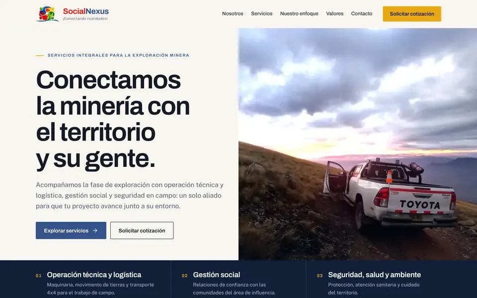
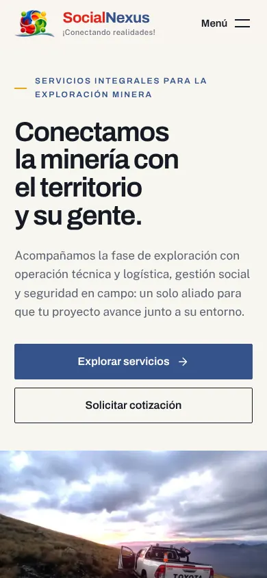

Propuesta A · publicada en la raíz
Corporativa industrial
Equilibrio entre capacidad operativa y gestión social. Composición editorial clara, fotografía amplia y una jerarquía muy legible para responsables de proyectos y logística.
- Tono
- Sobrio, corporativo, claro
- Tipografía
- Archivo + Public Sans
- Paleta
- Navy y azul institucional, papel cálido, dorado para la acción
- Primero se lee
- Propuesta de valor y tres dimensiones del servicio